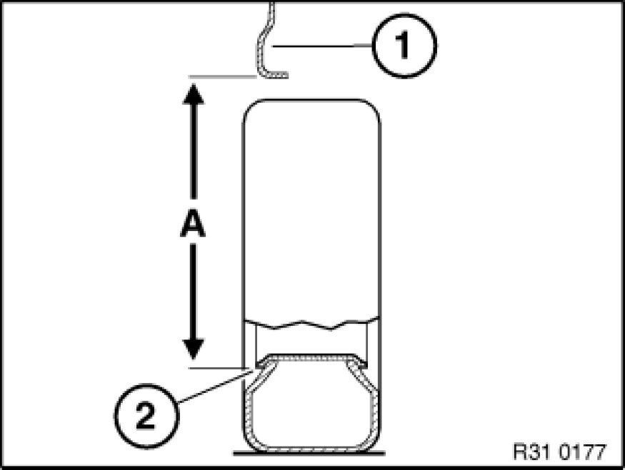

Measuring Ride-Level Height of Vehicle
31 33 095 - Measuring ride-level height of vehicle

Necessary preliminary tasks:
- Move vehicle into normal position Moving Vehicle Into Normal Position

Determine actual ride height (A) - to do so, attach tape measure to rim flange (2) at bottom middle and measure to lower edge of wheel arch (1).